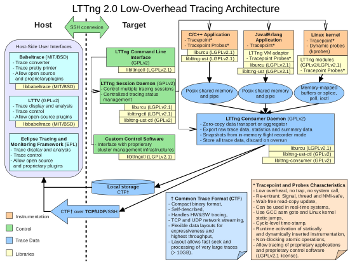

LTTng 2.0: Tracing for power users and developers - part 1
The recently released Linux Trace Toolkit next generation (LTTng) 2.0 tracer is the result of a two-year development cycle involving a team of dedicated developers. Unlike its predecessor, LTTng 0.x, it can be installed on a vanilla or distribution kernel without any patches. It also performs combined tracing of both the kernel and user space, and has many more features that will be detailed in this article and its successor.
Why LTTng 2.0?
The main motivation behind LTTng 2.0 is that we identified a strong demand for user-space tracing, and we noticed that targeting a user base broader than developers required a lot of work focusing on usability. Moving forward toward these goals led us to the unification of the tracer control and user interface (UI) for both kernel and user-space tracing.
Some might wonder why we did not go down the Perf or Ftrace path for our development. Perf does not meet our performance needs, and is in many ways designed specifically for the Linux kernel (e.g. the trace format is kernel-specific). As for Ftrace, its performance is similar to that of LTTng, but its main focus is on simplicity for kernel debugging use-cases, which means a single user, single tracing session, and single set of buffers. It also has a trace format specifically tuned for the Linux kernel, which does not meet our requirements.
LTTng 2.0 features
LTTng 2.0 is pretty much a rewrite of the older 0.x LTTng versions, but now focusing on usability and end-user experience. It builds on the solid foundations of LTTng 0.x for data transport, uses the existing Linux kernel instrumentation mechanisms, and makes the flexible CTF (Common Trace Format) available to end users. For example, that allows prepending arbitrary performance monitoring unit (PMU) counter values to each traced event.
LTTng provides an integrated interface for both kernel and user-space tracing. A "tracing" group allows non-root users to control tracing and read the generated traces. It is multi-user aware, and allows multiple concurrent tracing sessions.
LTTng allows access to tracepoints, function tracing, CPU PMU counters, kprobes, and kretprobes. It provides the ability to attach "context" information to events in the trace (e.g. any PMU counter, process and thread ID, container-aware virtual PIDs and TIDs, process name, etc). All the extra information fields to be collected with events are optional, specified on a per-tracing-session basis (except for timestamp and event id, which are mandatory). It works on mainline kernels (2.6.38 or higher) without any patches.
The Common Trace Format specification has been designed in collaboration with various industry participants to suit the tracing tool interoperability needs of the embedded, telecommunications, high-performance, and Linux kernel communities. It is designed to allow traces to be natively generated by the Linux kernel, Linux user-space applications written in C/C++, and hardware components. One major element of CTF is the Trace Stream Description Language (TSDL) which flexibly enables description of various binary trace stream layouts. It supports reading and writing traces on architectures with different endian-ness and type sizes, including bare metal generating trace data that is addressed in a bitwise manner. The trace data is represented in a native binary format for increased tracing speed and compactness, but can be read and analyzed on any other machine that supports the Babeltrace data converter.

LTTng is a high-performance tracer that produces very compact trace data, with low overhead on the traced system. A somewhat dense overview of the LTTng 2.0 architecture can be seen at right, click through for a larger view.
Tracer strengths overview
The diversity of tracing tools available in Linux today can baffle users trying to pick which one to use. Each has been developed with different use cases in mind, which makes the motto "use the right tool for the job" very appropriate. In this section, we present the strengths of the major Linux kernel tracing tools. Please keep in mind that the authors tried to keep an objective perspective when writing this section, which is based on information received during the past years' conferences.
LTTng 2.0
The targeted LTTng audience includes anyone responsible for production systems, system administrators, and application developers. LTTng focuses on providing a system-wide view (across software stack layers) with detailed combined application and system-level execution traces, without adding too much overhead to the traced system.
One downside of LTTng 2.0 is that it is not provided by the upstream kernel: it requires that either the distribution, or the end user, install separate packages. LTTng 2.0 is also not geared toward kernel development: it currently does not support integration with kernel crash dump tools, nor does it support kernel early boot tracing.
LTTng is best suited to finding performance slowdowns or latency issues (e.g. long delays) in production or while doing development when the cause is either unknown or comes from the interaction between various software/hardware components. It can also be used to monitor production systems and desktops (in flight recorder mode) and trigger an execution trace snapshot when an error occurs, which provides detailed reports to system administrators and developers. (Note: flight recorder support was available in LTTng 0.x, but is not fully supported by the LTTng 2.0 tracing session daemon. Stay tuned for the 2.1 release currently in preparation.)
Perf
Perf is very good at sampling hardware and software counters. The key feature around which it has been designed is per-process performance counter sampling for the kernel and user space. It targets both user space and kernel developer audiences. Perf is multi-user aware, although it allows tracing from non-root users for per-process information only.
Perf's event header is fixed, with extensible payload definitions. Therefore, although new events can be added, the content of its event header is fixed by its ABI. Its tracing infrastructure resides at kernel-level only. That means tracing user space requires round-trips to the kernel, which causes a performance hit. Tracing features have been added using the same infrastructure developed for sampling.
In development environments, Perf is useful as a hardware performance counter and kernel-level software event sampler for a process (or group of processes). It can give insight into the major bottlenecks slowing down process execution, when the cause of the slowdown can be pinpointed to a particular set of processes.
Ftrace
Ftrace has been designed with function tracing as primary purpose; it also supports tracepoint instrumentation and dynamic probing. It has efficient mechanisms to quickly collect data and to filter out information that is not interesting to the user. Ftrace targets a kernel developer audience, including console output integration that allows dumping tracing buffers upon a kernel crash. Its event headers are fixed by the ABI, with extensible event payload definitions. Its ring buffer is heavily optimized for performance, but it allows only a single user to trace at any given time. Its tracing infrastructure resides at kernel-level only. Therefore, similar to Perf, tracing user space requires a round-trip to the kernel, which causes a performance hit.
In development environments, Ftrace is suited for kernel developers who want to debug bugs and latency issues occurring at kernel-level. One of the major Ftrace strengths over Perf is its low overhead. It is therefore well-suited for tracing high-throughput data coming from frequently hit tracepoints or from function entry/exit instrumentation on busy systems.
LTTng 2.0 usage examples
LTTng 2.0 can be installed on a recent Linux distribution without requiring any kernel changes. The individual package README files contain the installation instructions and dependencies. When using lttng for kernel tracing from the tracing group, the lttng-sessiond daemon needs to be started as root beforehand. This is usually performed by init scripts for Linux distributions.
The user interface entry point to LTTng 2.0 is the lttng command. The same actions can also be performed programmatically through the lttng.h API and the liblttng library.
1. Kernel activity overview with tracepoints
Tracing the kernel activity can be done by enabling all tracepoints and then starting a trace session. This sequence of commands will show a human-readable text log of the system activity (run as root or a user in the tracing group):
# lttng create
# lttng enable-event --kernel --all
# lttng start
# sleep 10 # let the system generate some activity
# lttng stop
# lttng view
# lttng destroy
Here is an example of the event text output (with annotation), generated by using:
# lttng view -e "babeltrace -n all"
to show all field names:
timestamp = 18:27:42.301503743, # Event timestamp
delta = +0.000001871, # Timestamp delta from previous event
name = sys_recvfrom, # Event name
stream.packet.context = { # Stream-specific context information
cpu_id = 3 # CPU which has written this event
},
event.fields = { # Event payload
fd = 4,
ubuf = 0x7F9C100AD074,
size = 4096,
flags = 0,
addr = 0x0,
addr_len = 0x0
}
To get the list of available tracepoints:
# lttng list --kernel
Specific tracepoints can be traced with:
# lttng enable-event --kernel irq_handler_entry,irq_handler_exit
# this can be followed by more "lttng enable-event" commands.
2. Dynamic Probes
This second example shows how to plant a dynamic probe (kprobe) in the kernel and gather information from the probe:
# lttng create
# lttng enable-event --kernel sys_open --probe sys_open+0x0
# lttng enable-event --kernel sys_close --probe sys_close+0x0
# run "lttng enable-event" for more details
# lttng start
# sleep 10 # let the system generate some activity
# lttng stop
# lttng view
# lttng destroy
Example event generated:
timetamp = 18:32:53.198603728, # Event timestamp
delta = +0.000013485, # Timestamp delta from previous event
name = sys_open, # event name
stream.packet.context = { # Stream-specific context information
cpu_id = 1 # CPU which has written this event
},
event.fields = {
ip = 0xFFFFFFFF810F2185 # Instruction pointer where probe was planted
}
All instrumentation sources can be combined and collected within a trace session.
To be continued ...
LTTng 2.0 (code named "Annedd'ale") was released on March 20, 2012. It will be available as a package in Ubuntu 12.04 LTS, and should be available shortly for other distributions.
Only text output is currently available by using the Babeltrace converter. LTTngTop (which will be covered in part 2) is usable, although it is still under development. The graphical viewer LTTV and the Eclipse LTTng plugin are currently being migrated to LTTng 2.0. Both LTTngTop and LTTV will re-use the Babeltrace trace reading library, while the Eclipse LTTng plugin implements a CTF reading library in Java.
Part 2 of this article, will feature more usage examples including combined user space and kernel tracing, adding PMU counter contexts along with kernel tracing, a presentation of the new LTTngTop tool, and a discussion of the upstream plans for the project.
[ Mathieu Desnoyers is the CEO of EfficiOS Inc.,
which also employs Julien Desfossez and David Goulet.
LTTng was created under the
supervision of Professor
Michel R. Dagenais at Ecole Polytechnique de Montréal, where all of the
authors have done (or are doing) post-graduate studies. ]
| Index entries for this article | |
|---|---|
| Kernel | Development tools/Kernel tracing |
| Kernel | Tracing |